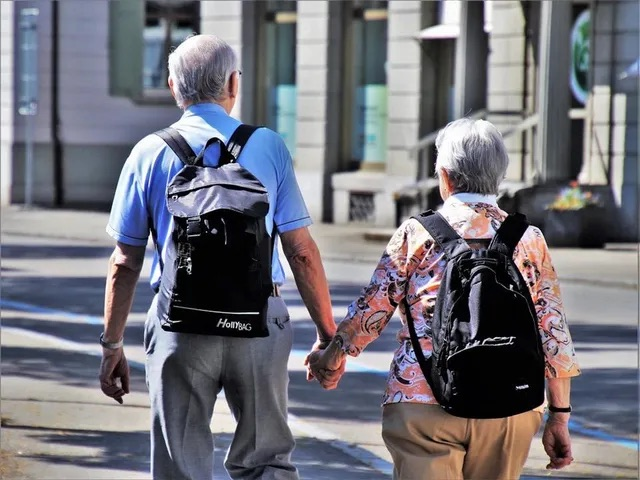

Ikääntyneiden liikunta, osa 2/4 KESTÄVYYSKUNTO
Julkaistu alunperin Medisportin blogissa.
Merkittävä osa ikääntyneiden toimintakyvyn ongelmista liittyy tavalla tai toisella fyysisen aktiivisuuden ja liikunnan vähäisyyteen. Omalla toiminnalla ja aktiivisuudella ikääntynyt henkilö pystyy vaikuttamaan oleellisesti omaan toimintakykyynsä ja arjessa jaksamiseensa. Koskaan ei ole liian myöhäistä aloittaa liikuntaa! Tässä neliosaisessa blogisarjassa tarkastellaan ikääntymisen aiheuttamia haasteita fyysisen kunnon osatekijöihin eli voimaan, kestävyyskuntoon, liikkuvuuteen ja tasapainoon. Näiden osatekijöiden riittävä taso on perusedellytys sujuvalle liikkumiselle.
KESTÄVYYSKUNTO
Tutkimusten mukaan korkea hapenkulutus kuormituskokeissa on yhteydessä alhaiseen kuolleisuuteen. Maksimaalisen hapenottokyvyn heikentymiseen vaikuttavat muun muassa lihasmassan väheneminen, alentunut fyysinen aktiivisuus, lihasten verenkierron heikentyminen sekä side- ja rasvakudoksen lisääntyminen lihaksissa. Koska maksimaalinen hapenottokyky laskee fyysisen aktiivisuuden määrästä riippumatta 5–15 % vuosikymmenessä yli 25-vuotiailla, on tärkeää huomioida mekanismit, joihin ikääntynyt henkilö voi itse vaikuttaa ja jotka vaikuttavat maksimaalisen hapenottokyvyn määrään. Näitä mekanismeja ovat esimerkiksi lihasmassan ylläpito ja fyysinen aktiivisuus.
On arvioitu, että 75–80-vuotiailla naisilla, jotka eivät ole fyysisesti aktiivisia, maksimaalinen hapenottokyky ei välttämättä riitä edes päivittäisten toimintojen suorittamiseen. Esimerkiksi portaiden kulkeminen, reipas kävely tai jopa vaatteiden pukeminen voi joillakin henkilöillä aiheuttaa vaikeuksia. Kävelynopeus hidastuu, kun kestävyyskunto heikkenee. Tämä aiheuttaa haasteita arjesta selviytymiseen, sillä esimerkiksi liikennevaloissa kulkeminen edellyttää tarpeeksi ripeää kävelynopeutta. Tällä tavalla alentunut kestävyyskunto heikentää ikääntyneen itsenäisen selviytymisen mahdollisuuksia. Lisäksi palautumiseen kuluu kauemmin aikaa kuin aiemmin, kun lihasten hapensaanti heikkenee hiussuonten määrän vähentyessä lihaksissa.

Sydämen työmäärä vähenee kestävyyskunnon kohentuessa
Kestävyyskunnon parantaminen on hyödyksi verenkiertoelimistön sairauksien hoidossa ja ennaltaehkäisyssä, sillä harjoittelu muun muassa alentaa leposykettä ja -verenpainetta – toisin sanoen sydämen työmäärä vähenee. Harjoittelun myötä kohentuva hapenottokyky johtuneekin nimenomaan verenkierrollisista muutoksista, kuten valtimo-laskimo-happieron lisääntymisestä, harjoitettavien raajojen verenkierron vilkastumisesta sekä verenkiertoelimistön muiden osien positiivista muutoksista. Arjen päivittäiset toiminnot muuttuvat helpommiksi ja niiden suorittaminen voi nopeutua, kun niistä selviää vähemmällä ponnistelulla. Hyvä kestävyyskunto voi toimia myös osana kaatumisen ehkäisyä. Se edistää terveyttä ja sitä käytetään osana monien sairauksien hoidossa, sillä säännöllisellä kestävyysharjoittelulla on positiivisia vaikutuksia muun muassa insuliinin paastoarvoihin, glukoosirasitusarvoihin, glukoositoleranssiin, insuliiniherkkyyteen sekä veren rasva-arvoihin. Myös kroonisten degeneratiivisten sairauksien riski saattaa alentua. Hyvä kestävyyskunto lisää toimintakykyä ja itsenäisyyttä sekä liikuntakykyisten ja elinvoimaisten vuosien määrää.

Hyvä kesätvyyskunto lisää itsenäisyyttä sekä elinvoimaisten vuosien määrää
Hyvän kestävyyskunnon ansiosta jaksaa liikkua ja suorittaa arkiaskareet helpommin ja nopeammin. Hyvä kestävyyskunto voi jopa mahdollistaa tiettyihin päivittäisiin toimintoihin kykenemisen, kuten kaupassa käynnin, portaiden nousemisen ja esimerkiksi liikenteessä kulkemisen. Myös raskaammat arkiset toiminnot, kuten ruohon leikkaaminen ja puiden pilkkominen kirveellä ovat mahdollisia vain, jos kestävyyskunto on riittävä. Kestävyysliikunta parantaa myös unen laatua, mikä on tärkeä huomioida myös ikääntyneen uniongelmien hoidossa.
Kestävyysliikuntaa parantaa unenlaatua
Hyvä kestävyyskuntoharjoittelu on sellaista, mitä on mielekästä tehdä. Kokeilemalla löytää itseään miellyttävät lajit. Helposti aloitettavia kestävyyskuntolajeja ovat kävely, uinti ja vesijuoksu, tanssi, hiihto, soutu sekä kuntopyöräily niin sisällä kuin ulkona. Tottumattoman on hyvä aloittaa harjoittelu alhaisemmalla teholla ja lisätä kuormitusta maltilla kunnon kohentuessa. Harjoituskertoja on hyvä olla viikkotasolla kolmesta viiteen. Yhden harjoituskerran pituus riippuu pitkälti harjoituksen intensiteetistä sekä kuntoilijan kuntotasosta. Aluksi harjoituksen kesto voi tottumattomalla olla esimerkiksi 10-20 minuuttia, hyväkuntoinen voi liikkua pidempäänkin. Maksimisyke pienenee iän mukana, mikä on hyvä huomioida sykemittareita käytettäessä.
Ota yhteyttä, jos tarvitset fysioterapeuttista apua lihasvoimaharjoittelun aloittamisessa.
Lähteet:
HEIKKINEN, E . RANTANEN, T. ( TOIM. ) 2013. GERONTOLOGIA. 3. UUDISTETTU PAINOS. HELSINKI: KUSTANNUS OY DUODECIM.
PAJALA, S. 2012. IÄKKÄIDEN KAATUMISTEN EHKÄISY. OPAS. TERVEYDEN JA HYVINVOINNIN LAITOS.
SAKARI-RANTALA, R 2003. IÄKKÄIDEN IHMISTEN LIIKUNTA- JA KUNTOSALIHARJOITTELU. LIIKUNNAN JA KANSANTERVEYDEN JULKAISUJA 142. LIKES. JYVÄSKYLÄ.
Suomen terveysliikuntainstituutti. n.d. Ikääntymisen vaikutukset elimistöön.